1 Models definition
1.1 Binomial models for presence-absence data
We consider a latent variable model (LVM) to account for species co-occurrence (Warton et al. 2015) on all sites .
\[y_{ij} \sim \mathcal{B}iniomial(t_i, \theta_{ij})\]
\[ \mathrm{g}(\theta_{ij}) = \alpha_i + X_i\beta_j + W_i\lambda_j \] - $_{ij}: occurence probability of the species \(j\) on site \(i\). - \(t_i\): number of visits at site \(i\) - \(\mathrm{g}(\cdot)\): Link function (eg. logit or probit).
The inference method is able to handle only one visit by site with a probit link function so \(\forall i, \ t_i=1\) and \(y_{ij} \sim \mathcal{B}ernoulli(\theta_{ij})\).
- \(\alpha_i\): Site random effect with \(\alpha_i \sim \mathcal{N}(0, V_{\alpha})\). Corresponds to a mean suitability for site \(i\).
- \(X_i\): Vector of explanatory variables for site \(i\) (including intercept).
- \(\beta_j\): Effects of the explanatory variables on the probability of presence of species \(j\).
- \(W_i\): Vector of random latent variables for site \(i\). \(W_i \sim N(0, 1)\). The number of latent variables must be fixed by the user (default to 2).
- \(\lambda_j\): Effects of the latent variables on the probability of presence of species \(j\). Also known as “factor loadings” (Warton et al. 2015).
This model is equivalent to a multivariate GLMM \(\mathrm{g}(\theta_{ij}) =\alpha_i + X_i.\beta_j + u_{ij}\), where \(u_{ij} \sim \mathcal{N}(0, \Sigma)\) with the constraint that the variance-covariance matrix \(\Sigma = \Lambda \Lambda^{\prime}\), where \(\Lambda\) is the full matrix of factor loadings, with the \(\lambda_j\) as its columns.
1.2 Poisson model for abundance data
Referring to the models used in the articles (Hui 2016), we define the following model to account for species abundances on all sites.
\[y_{ij} \sim \mathcal{P}oisson(\theta_{ij})\].
\[ \mathrm{log}(\theta_{ij}) =\alpha_i + \beta_{0j}+X_i\beta_j+ W_i\lambda_j \]
2 Data-sets
Among the following datasets, the presence-absence data are from the (Wilkinson et al. 2019) article in which they are used to compare joint species distribution models for presence-absence data, the dataset that records the presence or absence of birds during several visits to each site is from the (Kéry & Schmid 2006) article and the mites abundance data-set is from the (Borcard & Legendre 1994) article.
#> ##
#> ## jSDM R package
#> ## For joint species distribution models
#> ## https://ecology.ghislainv.fr/jSDM
#> ##
#> Loading required package: coda
#> This is boral version 2.0. If you recently updated boral, please check news(package = "boral") for the updates in the latest version.| Simulated | Mosquitos | Eucalypts | Frogs | Fungi | Birds | Mites | |
|---|---|---|---|---|---|---|---|
| data type | presence-absence | presence-absence | presence-absence | presence-absence | presence-absence | presence-absence | abundance |
| distribution | bernoulli | bernoulli | bernoulli | bernoulli | bernoulli | binomial | poisson |
| n.site | 300 | 167 | 455 | 104 | 438 | 266 | 70 |
| n.species | 100 | 16 | 12 | 9 | 11 | 110 | 30 |
| n.latent | 2 | 2 | 2 | 2 | 2 | 2 | 2 |
| n.X.coefs | 3 | 14 | 8 | 4 | 13 | 4 | 12 |
| n.obs | 30000 | 2672 | 5460 | 936 | 4818 | 29260 | 2100 |
| n.param | 1400 | 757 | 1485 | 366 | 1479 | 1458 | 630 |
| n.mcmc | 15000 | 15000 | 15000 | 15000 | 15000 | 15000 | 15000 |

|

|

|

|
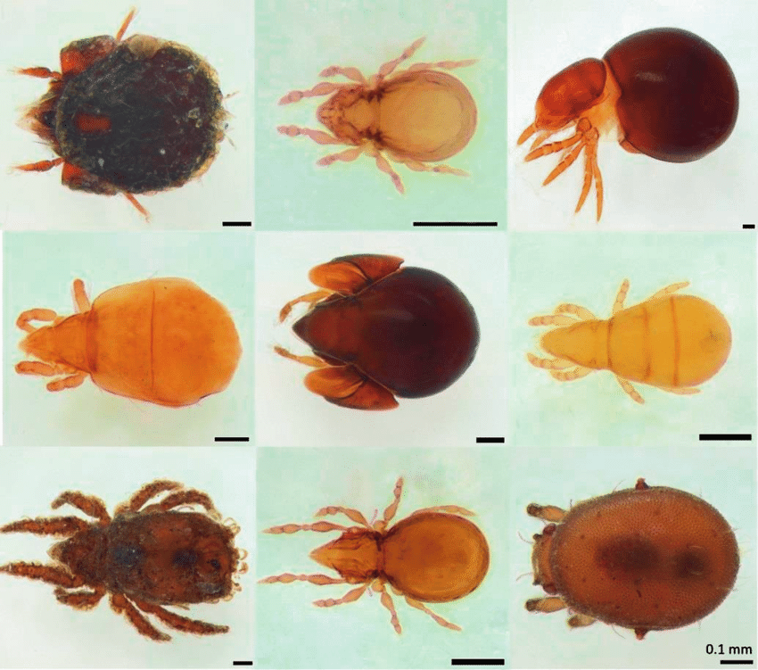 |
In the article (Warton et al. 2015) the fitting of joint species distributions models is performed using the package boral which runs with JAGS (Just Another Gibbs Sampler) a simulation program from hierarchical Bayesian models using MCMC methods implemented in C++.
This package and the package jSDM allow to fit the model defined previously, so we can compare the results obtained by each of them on different datasets.
3 Package boral
In a first step, we fit joint species distribution models from previous datasets using the boral() function from package of the same name whose functionalities are developed in the article (Hui 2016).
3.1 Simulated dataset
We generate a data-set following the previous model with 300 sites, 100 species and as parameters :
# Toy example :
nsp <- 100
nsite <- 300
np <- 3
nl <- 2
seed <- 123
set.seed(seed)
# Ecological process (suitability)
x1 <- rnorm(nsite,0,1)
x2 <- rnorm(nsite,0,1)
X <- cbind(rep(1,nsite),x1,x2)
# Simulation of parameters
W <- cbind(rnorm(nsite,0,1),rnorm(nsite,0,1))
beta.target <- t(matrix(runif(nsp*np,-2,2), byrow=TRUE, nrow=nsp))
l.zero <- 0
l.diag <- runif(2,0,2)
l.other <- runif(nsp*2-3,-2,2)
lambda.target <- t(matrix(c(l.diag[1],l.zero,l.other[1],l.diag[2],l.other[-1]),
byrow=T, nrow=nsp))
param.target <- rbind(beta.target,lambda.target)
V_alpha.target <- 0.5
alpha.target <- rnorm(nsite,0,sqrt(V_alpha.target))
# Simulation of response data with probit link
probit_theta <- X %*% beta.target + W %*% lambda.target + alpha.target
e <- matrix(rnorm(nsp*nsite,0,1),nsite,nsp)
Z_true <- probit_theta + e
Y <- matrix (NA, nsite,nsp)
for (i in 1:nsite){
for (j in 1:nsp){
if ( Z_true[i,j] > 0) {Y[i,j] <- 1}
else {Y[i,j] <- 0}
}
}We fit a binomial joint species distribution model, including random site effect and latent variables, from the simulated dataset using the boral() function to perform binomial probit regression.
library(boral)
T1<-Sys.time()
mod_boral_sim <- boral(y=Y, X=X[,-1], lv.control=list(num.lv=nl),
family="binomial", row.eff="random",
hypparams=c(10,10,10,30),
mcmc.control=list(n.burnin=10000,n.iteration=15000,
n.thin=5,seed=123))
T2<-Sys.time()
T_boral_sim=difftime(T2, T1)
# Predicted probit(theta)
probit_theta_pred_sim <- mod_boral_sim$row.coefs$ID1$mean +
X[,-1] %*% t(mod_boral_sim$X.coefs.mean) +
X[,1] %*% mod_boral_sim$lv.coefs.mean[,"beta0"] +
mod_boral_sim$lv.mean%*%t(mod_boral_sim$lv.coefs.mean[,-1])
# RMSE
SE=(probit_theta-probit_theta_pred_sim)^2
RMSE_boral_sim=sqrt(sum(SE/(nsite*nsp)))
# Deviance
logL=0
for (i in 1:nsite){
for (j in 1:nsp){
theta <- pnorm(probit_theta_pred_sim[i,j])
logL=logL + dbinom(Y[i,j],1,theta,1)
}
}
Deviance_boral_sim <- -2*logL
save(np, nl, nsp, nsite, beta.target, lambda.target, alpha.target,
V_alpha.target, X, W, probit_theta, Z_true, Y, T_boral_sim,
mod_boral_sim, probit_theta_pred_sim,
RMSE_boral_sim, Deviance_boral_sim,
file="jSDM_boral_cache/boral_simulation.RData")
load(file="jSDM_boral_cache/boral_simulation.RData")
## Fixed species effect beta
par(mfrow=c(1,2))
plot(t(beta.target),
cbind(mod_boral_sim$lv.coefs.mean[,1],mod_boral_sim$X.coefs.mean),
xlab="obs", ylab="fitted", main="Fixed species effect beta")
abline(a=0,b=1,col='red')
## factor loadings lambda_j
plot(t(lambda.target),mod_boral_sim$lv.coefs.mean[,-1],
xlab="obs", ylab="fitted", main="Loading factors lambda")
abline(a=0,b=1,col='red')
## Latent variable W
par(mfrow=c(1,2))
for (l in 1:nl) {
plot(W[,l],mod_boral_sim$lv.mean[,l],
main=paste0("Latent variable W_", l),
xlab="obs", ylab="fitted")
abline(a=0,b=1,col='red')
}
## alpha
par(mfrow=c(1,1))
plot(alpha.target, mod_boral_sim$row.coefs$ID1$mean,
xlab="obs", ylab="fitted")
abline(a=0,b=1,col='red')
points(V_alpha.target, mod_boral_sim$row.sigma$ID1["mean"],
pch=17, col='red', cex=1.5)
legend("topleft", legend="V_alpha", pch=17, col='blue')
title("Random site effect alpha and its variance")
## Prediction
# probit_theta_pred
plot(probit_theta,probit_theta_pred_sim,
main="probit(theta)", xlab ="obs", ylab="fitted")
abline(a=0,b=1,col='red')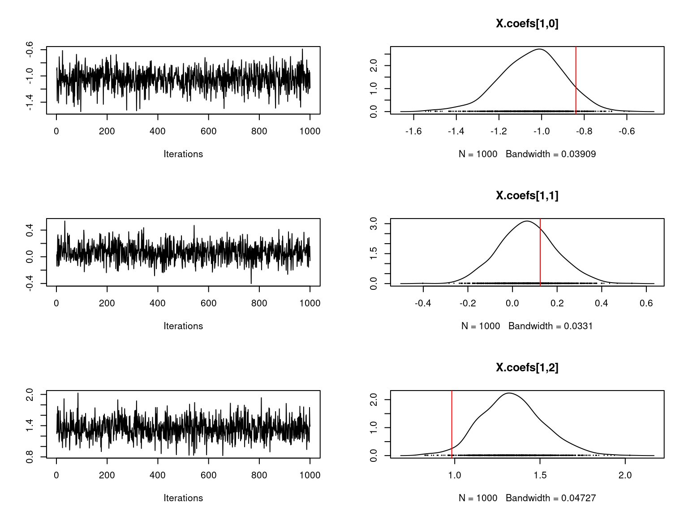 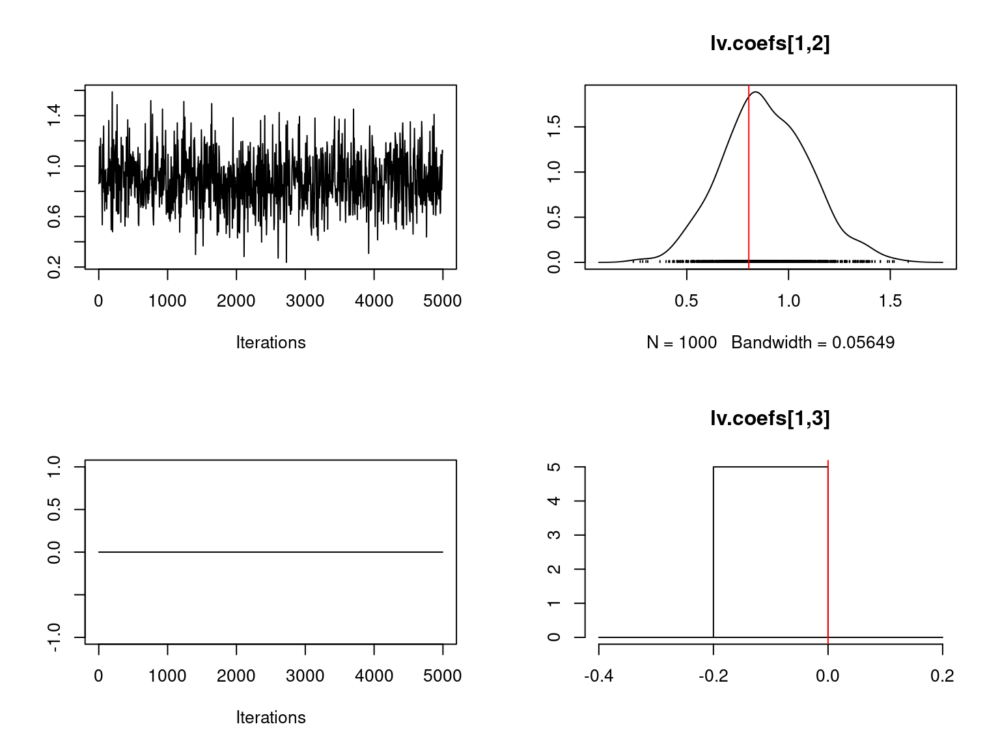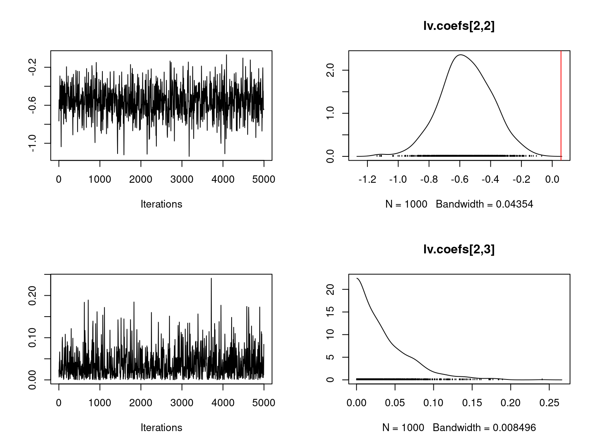
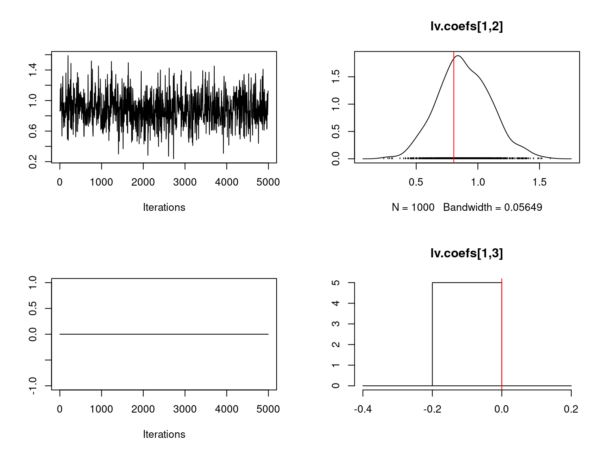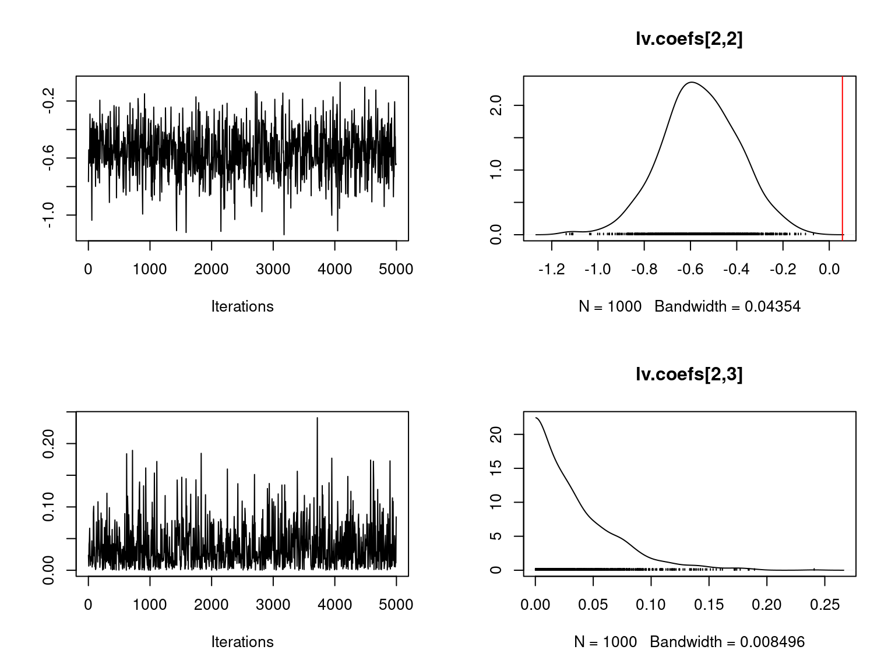
3.2 Mosquitos dataset
We fit a binomial joint species distribution model, including random site effect and latent variables, from the mosquitos dataset using boral() function to perform binomial probit regression.
# Import center and reduce Mosquito dataset
data(mosquitos, package="jSDM")
head(mosquitos)
Env_Mosquitos <- mosquitos[,17:29]
Env_Mosquitos <- cbind(scale(Env_Mosquitos[,1:4]), Env_Mosquitos[,5:13])
PA_Mosquitos <- mosquitos[,1:16]
# Fit the model
T1 <- Sys.time()
mod_boral_Mosquitos <- boral(y=PA_Mosquitos, X=Env_Mosquitos,
lv.control=list(num.lv=2), family="binomial",
row.eff="random", hypparams=c(10,10,10,30),
mcmc.control=list(n.burnin=10000,n.iteration=15000,
n.thin=5,seed=123))
T2 <- Sys.time()
T_boral_Mosquitos <- difftime(T2,T1)
# Predicted probit(theta)
probit_theta_pred_Mosquitos <- mod_boral_Mosquitos$row.coefs[[1]]$mean +
as.matrix(Env_Mosquitos) %*% t(mod_boral_Mosquitos$X.coefs.mean) +
matrix(1,nrow=nrow(PA_Mosquitos), ncol=1)%*%mod_boral_Mosquitos$lv.coefs.mean[,"beta0"] +
mod_boral_Mosquitos$lv.mean%*% t(mod_boral_Mosquitos$lv.coefs.mean[,-1])
# Deviance
logL=0
for (i in 1:nrow(PA_Mosquitos)){
for (j in 1:ncol(PA_Mosquitos)){
theta <- pnorm(probit_theta_pred_Mosquitos[i,j])
logL=logL + dbinom(PA_Mosquitos[i,j],1,theta,1)
}
}
Deviance_boral_Mosquitos <- -2*logL
save(T_boral_Mosquitos, mod_boral_Mosquitos,
probit_theta_pred_Mosquitos, Deviance_boral_Mosquitos,
file="jSDM_boral_cache/boral_Mosquitos.RData")3.3 Eucalypts dataset
We fit a binomial joint species distribution model, including random site effect and latent variables, from the eucalypts dataset using boral() function to perform binomial probit regression.
# Import center and reduce Eucalypts dataset
data(eucalypts, package="jSDM")
head(eucalypts)
Env_Eucalypts <- cbind(scale(eucalypts[,c("Rockiness","VallyBotFlat","PPTann", "cvTemp","T0")]),eucalypts[,c("Sandiness","Loaminess")])
PA_Eucalypts <- eucalypts[,1:12]
Env_Eucalypts <- Env_Eucalypts[rowSums(PA_Eucalypts) != 0,]
# Remove sites where none species was recorded
PA_Eucalypts<- PA_Eucalypts[rowSums(PA_Eucalypts) != 0,]
# Fit the model
T1 <- Sys.time()
mod_boral_Eucalypts <- boral(y=PA_Eucalypts, X=Env_Eucalypts,
lv.control=list(num.lv=2), family="binomial",
row.eff="random", hypparams=c(10,10,10,30),
mcmc.control=list(n.burnin=10000,n.iteration=15000,
n.thin=5,seed=123))
T2 <- Sys.time()
T_boral_Eucalypts <- difftime(T2,T1)
# Predicted probit(theta)
probit_theta_pred_Eucalypts <- mod_boral_Eucalypts$row.coefs[[1]]$mean +
as.matrix(Env_Eucalypts) %*% t(mod_boral_Eucalypts$X.coefs.mean) +
matrix(1,nrow=nrow(PA_Eucalypts),ncol=1)%*%mod_boral_Eucalypts$lv.coefs.mean[,"beta0"] +
mod_boral_Eucalypts$lv.mean%*%t(mod_boral_Eucalypts$lv.coefs.mean[,-1])
# Deviance
logL=0
for (i in 1:nrow(PA_Eucalypts)){
for (j in 1:ncol(PA_Eucalypts)){
theta <- pnorm(probit_theta_pred_Eucalypts[i,j])
logL=logL + dbinom(PA_Eucalypts[i,j],1,theta,1)
}
}
Deviance_boral_Eucalypts <- -2*logL
save(T_boral_Eucalypts, mod_boral_Eucalypts,
probit_theta_pred_Eucalypts, Deviance_boral_Eucalypts,
file="jSDM_boral_cache/boral_Eucalypts.RData")3.4 Frogs dataset
We fit a binomial joint species distribution model, including random site effect and latent variables, from the frogs dataset using boral() function to perform binomial probit regression.
# Import center and reduce Frogs dataset
data(frogs, package="jSDM")
head(frogs)
Env_Frogs <- cbind(scale(frogs[,"Covariate_1"]),frogs[,"Covariate_2"],
scale(frogs[,"Covariate_3"]))
colnames(Env_Frogs) <- colnames(frogs[,1:3])
PA_Frogs <- frogs[,4:12]
# Fit the model
T1 <- Sys.time()
mod_boral_Frogs <- boral(y=PA_Frogs, X=Env_Frogs,
lv.control=list(num.lv=2), family="binomial",
row.eff="random", hypparams=c(10,10,10,30),
mcmc.control=list(n.burnin=10000, n.iteration=15000,
n.thin=5,seed=123))
T2 <- Sys.time()
T_boral_Frogs <- difftime(T2,T1)
# Predicted probit(theta)
probit_theta_pred_Frogs <- mod_boral_Frogs$row.coefs[[1]]$mean +
as.matrix(Env_Frogs) %*% t(mod_boral_Frogs$X.coefs.mean) +
matrix(1,nrow=nrow(PA_Frogs), ncol=1)%*%mod_boral_Frogs$lv.coefs.mean[,"beta0"] +
mod_boral_Frogs$lv.mean%*%t(mod_boral_Frogs$lv.coefs.mean[,-1])
# Deviance
logL=0
for (i in 1:nrow(PA_Frogs)){
for (j in 1:ncol(PA_Frogs)){
theta <- pnorm(probit_theta_pred_Frogs[i,j])
logL=logL + dbinom(PA_Frogs[i,j],1,theta,1)
}
}
Deviance_boral_Frogs <- -2*logL
save(T_boral_Frogs, mod_boral_Frogs,
probit_theta_pred_Frogs, Deviance_boral_Frogs,
file="jSDM_boral_cache/boral_Frogs.RData")3.5 Fungi dataset
We fit a binomial joint species distribution model, including random site effect and latent variables, from the fungi dataset using boral() function to perform binomial probit regression.
# Import center and reduce fungi dataset
data(fungi, package="jSDM")
Env_Fungi <- cbind(scale(fungi[,c("diam","epi","bark")]),
fungi[,c("dc1","dc2","dc3","dc4","dc5",
"quality3","quality4","ground3","ground4")])
colnames(Env_Fungi) <- c("diam","epi","bark","dc1","dc2","dc3","dc4","dc5",
"quality3","quality4","ground3","ground4")
PA_Fungi <- fungi[,c("antser","antsin","astfer","fompin","hetpar","junlut",
"phefer","phenig","phevit","poscae","triabi")]
Env_Fungi <- Env_Fungi[rowSums(PA_Fungi) != 0,]
# Remove sites where none species was recorded
PA_Fungi<- PA_Fungi[rowSums(PA_Fungi) != 0,]
# Fit the model
T1 <- Sys.time()
mod_boral_Fungi <- boral(y=PA_Fungi, X=Env_Fungi,
lv.control=list(num.lv=2), family="binomial",
row.eff="random", hypparams=c(10,10,10,30),
mcmc.control=list(n.burnin=10000, n.iteration=15000,
n.thin=5,seed=123))
T2 <- Sys.time()
T_boral_Fungi <- difftime(T2,T1)
# Predicted probit(theta)
probit_theta_pred_Fungi <- mod_boral_Fungi$row.coefs[[1]]$mean +
as.matrix(Env_Fungi) %*% t(mod_boral_Fungi$X.coefs.mean) +
matrix(1,nrow=nrow(PA_Fungi), ncol=1)%*%mod_boral_Fungi$lv.coefs.mean[,"beta0"] +
mod_boral_Fungi$lv.mean%*%t(mod_boral_Fungi$lv.coefs.mean[,-1])
# Deviance
logL=0
for (i in 1:nrow(PA_Fungi)){
for (j in 1:ncol(PA_Fungi)){
theta <- pnorm(probit_theta_pred_Fungi[i,j])
logL=logL + dbinom(PA_Fungi[i,j],1,theta,1)
}
}
Deviance_boral_Fungi <- -2*logL
save(T_boral_Fungi, mod_boral_Fungi,
probit_theta_pred_Fungi, Deviance_boral_Fungi,
file="jSDM_boral_cache/boral_Fungi.RData")3.6 Birds dataset
We fit a binomial joint species distribution model with multiple visit by site, including random site effect and latent variables, from the birds dataset using boral() function to perform binomial logistic regression.
We have to specify the JAGS model in the jagsboralmodel.txt file because the default JAGS model generated by boral function doesn’t allow to indicate different number of trials for each site as it is the case in birds dataset.
# Import center and reduce birds dataset
data(birds, package="jSDM")
# data.obs
PA_Birds <- birds[,1:158]
# Remove species with less than 5 presences
rare_sp <- which(apply(PA_Birds>0, 2, sum) < 5)
PA_Birds <- PA_Birds[, -rare_sp]
# Normalized continuous variables
Env_Birds <- data.frame(cbind(scale(birds[,c("elev","rlength","forest")]),
birds[,"nsurvey"]))
colnames(Env_Birds) <- c("elev","rlength","forest","nsurvey")
# Compute design matrix
mf.suit <- model.frame(formula=~elev+rlength+forest-1, data=Env_Birds)
X_Birds <- model.matrix(attr(mf.suit,"terms"), data=mf.suit)
# Number of latent variables
num.lv <- 2
# Fit the model
library(jagsUI)
T1 <- Sys.time()
# Number of trials by site impossible to specify, trial.size either equal to a single element, or a vector of length equal to the number of columns in y
# mod_boral_Birds <- boral(y=PA_Birds, X=X_Birds,
# lv.control=list(num.lv=2), family="binomial",
# trial.size=max(Env_Birds$nsurvey),
# row.eff="random", hypparams=c(10,10,10,30),
# mcmc.control=list(n.burnin=10000, n.iteration=15000,
# n.thin=5,seed=123))
# JAGS model in vignettes/jagsboralmodel.txt modified to specify the number of trials by site
# Data needed to fit the model
jags.data <- list(y=as.matrix(PA_Birds), n=nrow(PA_Birds), p=ncol(PA_Birds),
X=as.matrix(X_Birds), visits=Env_Birds$nsurvey, num.lv = 2)
# Starting values
gen.inits <- function() {
alpha <- rep(0,nrow(PA_Birds))
Valpha <- 1
beta <- matrix(0, ncol(PA_Birds), ncol(X_Birds))
lambda <- matrix(0, ncol(PA_Birds),num.lv +1)
for (j in 1:ncol(PA_Birds)){
for (k in 1:num.lv){
lambda[k,k+1] <- 1
if(j<k) {
lambda[j,k+1] <- NA
}
}
}
W <- matrix(0, nrow(PA_Birds), num.lv)
list("X.coefs"=beta,"row.coefs"=alpha,"row.sigma"=Valpha,"lvs"=W, "lv.coefs" = lambda)
}
# Fit JAGS model
mod_boral_Birds <- jagsUI::jags(data = jags.data, inits <- gen.inits,
parameters.to.save = c("X.coefs","row.coefs",
"row.sigma","lvs", "lv.coefs"),
model.file = "jagsboralmodel.txt",
n.chains = 1, n.iter=15000, n.burnin = 10000, n.thin = 5)
T2 <- Sys.time()
T_boral_Birds <- difftime(T2,T1)
# Predicted logit(theta)
logit_theta_pred_Birds <- c(mod_boral_Birds$mean$row.coefs) +
as.matrix(X_Birds) %*% t(as.matrix(mod_boral_Birds$mean$X.coefs)) +
matrix(1,nrow=nrow(PA_Birds), ncol=1)%*% mod_boral_Birds$mean$lv.coefs[,1] +
mod_boral_Birds$mean$lvs%*%t(mod_boral_Birds$mean$lv.coefs[,-1])
# Deviance
logL=0
for (i in 1:nrow(PA_Birds)){
for (j in 1:ncol(PA_Birds)){
theta <- inv_logit(logit_theta_pred_Birds[i,j])
logL= logL + dbinom(PA_Birds[i,j],Env_Birds$nsurvey[i],theta,1)
}
}
Deviance_boral_Birds <- -2*logL
# mod_boral_Birds$mean$deviance
save(T_boral_Birds, mod_boral_Birds,
logit_theta_pred_Birds, Deviance_boral_Birds,
file="jSDM_boral_cache/boral_Birds.RData")3.7 Mites dataset
We fit a joint species distribution model, including random site effect and latent variables, from the mites abundance dataset using boral() function to perform a poisson log-linear regression.
# Import center and reduce mites dataset
data(mites, package="jSDM")
# data.obs
PA_Mites <- mites[,1:35]
# Remove species with less than 10 presences
rare_sp <- which(apply(PA_Mites>0, 2, sum) < 10)
PA_Mites <- PA_Mites[, -rare_sp]
# Normalized continuous variables
Env_Mites <- cbind(scale(mites[,c("density","water")]),
mites[,c("substrate", "shrubs", "topo")])
mf.suit <- model.frame(formula=~., data=as.data.frame(Env_Mites))
X_Mites <- model.matrix(attr(mf.suit,"terms"), data=mf.suit)
# Fit the model
T1 <- Sys.time()
mod_boral_Mites <- boral(y=PA_Mites, X=X_Mites[,-1],
lv.control=list(num.lv=2), family="poisson",
row.eff="random", hypparams=c(10,10,10,30),
mcmc.control=list(n.burnin=10000, n.iteration=15000,
n.thin=5,seed=123))
T2 <- Sys.time()
T_boral_Mites <- difftime(T2,T1)
# Predicted probit(theta)
log_theta_pred_Mites <- as.matrix(X_Mites[,-1]) %*% t(mod_boral_Mites$X.coefs.mean) +
matrix(1,nrow=nrow(PA_Mites), ncol=1)%*%mod_boral_Mites$lv.coefs.mean[,"beta0"] +
mod_boral_Mites$lv.mean%*%t(mod_boral_Mites$lv.coefs.mean[,-1]) +
c(mod_boral_Mites$row.coefs[[1]]$mean)
# Deviance
logL=0
for (i in 1:nrow(PA_Mites)){
for (j in 1:ncol(PA_Mites)){
theta <- exp(log_theta_pred_Mites[i,j])
logL=logL + dpois(PA_Mites[i,j], theta,1)
}
}
Deviance_boral_Mites <- -2*logL
save(T_boral_Mites, mod_boral_Mites,
log_theta_pred_Mites, Deviance_boral_Mites,
file="jSDM_boral_cache/boral_Mites.RData")
4 Package jSDM
In a second step, we fit the same joint species distribution models from each of the previous datasets using the jSDM package.
4.1 Simulated dataset
We fit a binomial joint species distribution model, including random site effect and latent variables, from the simulated dataset using the jSDM_binomial_probit_block() function to perform binomial probit regression.
library(jSDM)
# Fit the model
T1<-Sys.time()
mod_jSDM_sim <- jSDM_binomial_probit_block(
# Chains
burnin=10000, mcmc=5000, thin=5,
# Response variable
presence_site_sp=Y,
# Explanatory variables
site_suitability=~x1+x2,
site_data=X,
# Model specification
n_latent=2, site_effect="random",
# Starting values
alpha_start=0, beta_start=0,
lambda_start=0, W_start=0,
V_alpha=1,
# Priors
shape=0.5, rate=0.0005,
mu_beta=0, V_beta=10 ,
mu_lambda=0, V_lambda=10,
# Various
seed=123, verbose=1)
T2<-Sys.time()
T_jSDM_sim=difftime(T2, T1)
# RMSE
SE=(probit_theta-mod_jSDM_sim$probit_theta_pred)^2
RMSE_jSDM_sim=sqrt(sum(SE/(nsite*nsp)))
save(T_jSDM_sim, mod_jSDM_sim, RMSE_jSDM_sim,
file="jSDM_boral_cache/jSDM_simulation.RData")
load(file="jSDM_boral_cache/jSDM_simulation.RData")
load(file="jSDM_boral_cache/boral_simulation.RData")
# ===================================================
# Result analysis
# ===================================================
## Fixed species effect beta
np <- ncol(X)
mean_beta <- matrix(0,nsp,np)
par(mfrow=c(ncol(X),2))
for (j in 1:nsp) {
for (p in 1:ncol(X)) {
mean_beta[j,p] <-mean(mod_jSDM_sim$mcmc.sp[[paste0("sp_",j)]][,p])
if (j < 3){
coda::traceplot(coda::as.mcmc(mod_jSDM_sim$mcmc.sp[[paste0("sp_",j)]][,p]))
coda::densplot(coda::as.mcmc(mod_jSDM_sim$mcmc.sp[[paste0("sp_",j)]][,p]),
main=paste(colnames(mod_jSDM_sim$mcmc.sp
[[paste0("sp_",j)]])[p],", species : ",j))
abline(v=beta.target[p,j],col='red')
}
}
}
## factor loadings lambda_j
mean_lambda <- matrix(0,nsp,nl)
par(mfrow=c(nl,2))
for (j in 1:nsp) {
for (l in 1:nl) {
mean_lambda[j,l] <-mean(mod_jSDM_sim$mcmc.sp[[paste0("sp_",j)]][,ncol(X)+l])
if (j < 3){
coda::traceplot(coda::as.mcmc(mod_jSDM_sim$mcmc.sp[[paste0("sp_",j)]][,ncol(X)+l]))
coda::densplot(coda::as.mcmc(mod_jSDM_sim$mcmc.sp[[paste0("sp_",j)]][,ncol(X)+l]),
main=paste(colnames(mod_jSDM_sim$mcmc.sp
[[paste0("sp_",j)]])[ncol(X)+l],", species : ",j))
abline(v=lambda.target[l,j],col='red')
}
}
}
par(mfrow=c(1,2))
plot(t(beta.target),mean_beta, xlab="obs", ylab="fitted",
main="Fixed species effect beta")
abline(a=0,b=1,col='red')
plot(t(lambda.target),mean_lambda, xlab="obs", ylab="fitted",
main="Loading factors lambda")
abline(a=0,b=1,col='red')
## W latent variables
par(mfrow=c(1,2))
for (l in 1:nl) {
plot(W[,l],apply(mod_jSDM_sim$mcmc.latent[[paste0("lv_",l)]],2,mean),
main=paste0("Latent variable W_", l), xlab="obs", ylab="fitted")
abline(a=0,b=1,col='red')
}
## V_alpha
par(mfrow=c(1,2))
coda::traceplot(mod_jSDM_sim$mcmc.V_alpha, main="V_alpha")
coda::densplot(mod_jSDM_sim$mcmc.V_alpha, main="V_alpha")
abline(v=V_alpha.target,col='red')
## alpha
par(mfrow=c(1,1))
plot(alpha.target,apply(mod_jSDM_sim$mcmc.alpha,2,mean),
xlab= "obs", ylab="fitted", main="Random site effect alpha")
abline(a=0,b=1,col='red')
SE=(probit_theta-mod_jSDM_sim$probit_theta_pred)^2
RMSE_jSDM_sim=sqrt(sum(SE/(nsite*nsp)))
## Deviance
plot(mod_jSDM_sim$mcmc.Deviance, main="Deviance")
#= Predictions
## probit_theta
par(mfrow=c(1,2))
plot(probit_theta,mod_jSDM_sim$probit_theta_pred,
xlab="obs",ylab="fitted", main="probit(theta)")
abline(a=0,b=1,col='red')
## Z
plot(Z_true,mod_jSDM_sim$Z_latent,
xlab="obs", ylab="fitted", main="latent variable Z")
abline(a=0,b=1,col='red')

 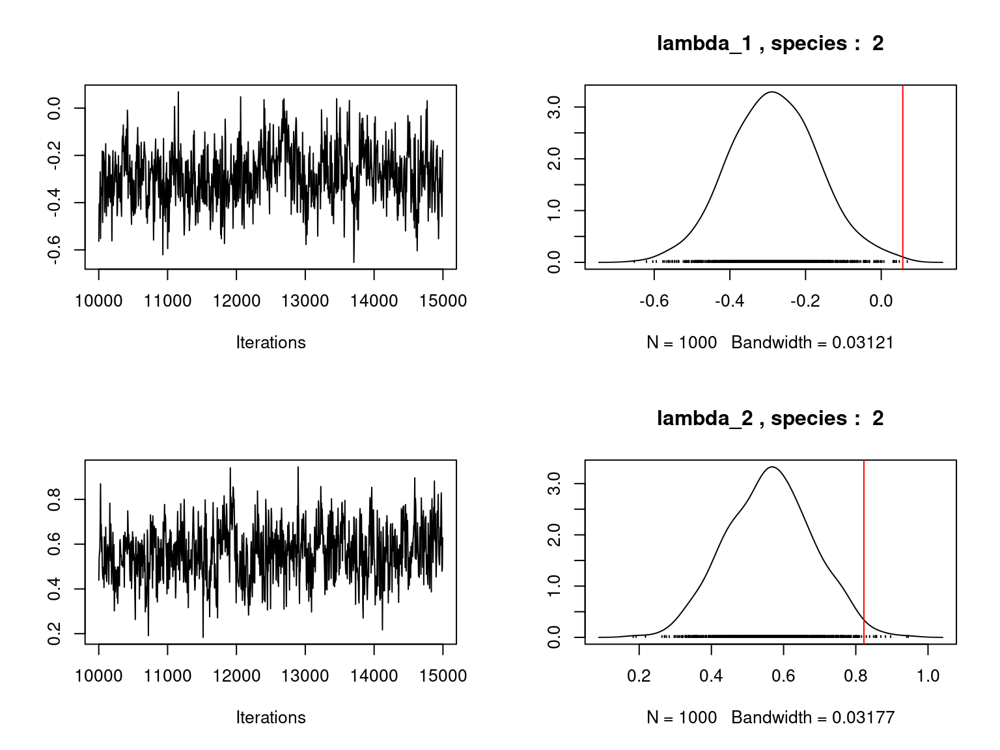
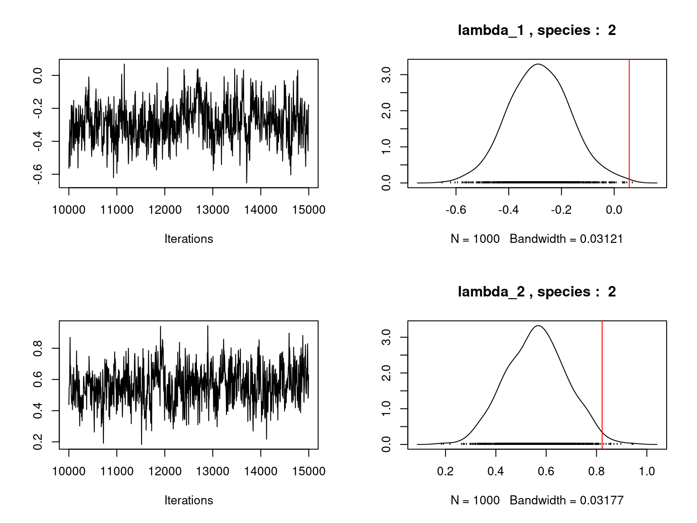
 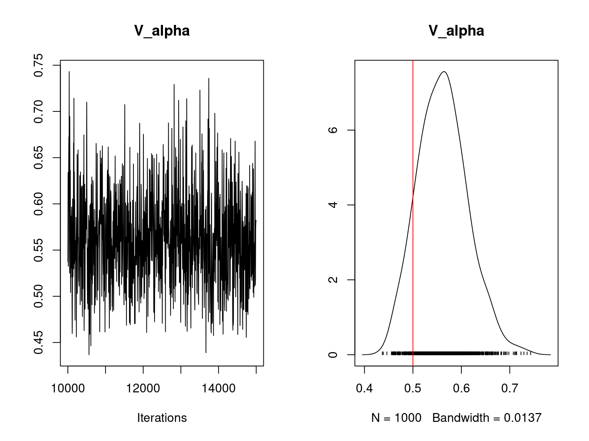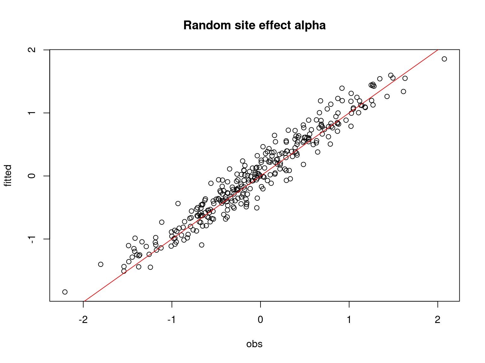
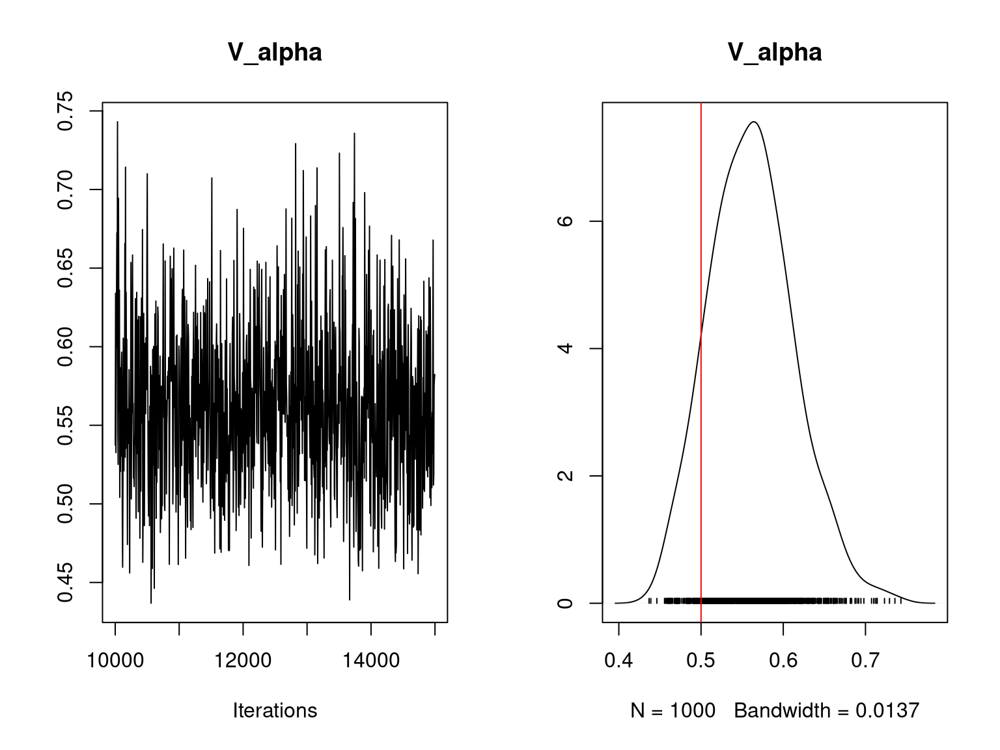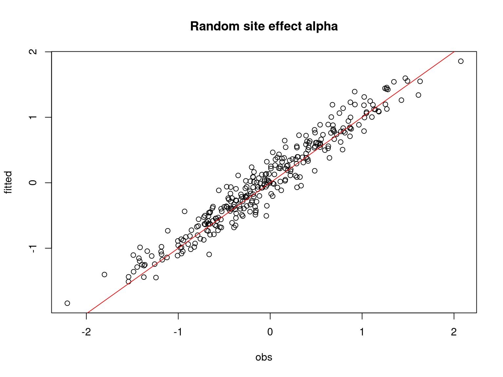 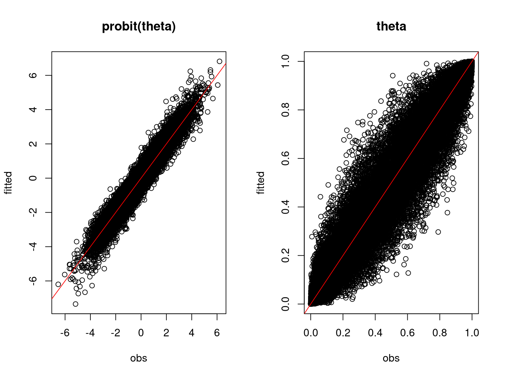
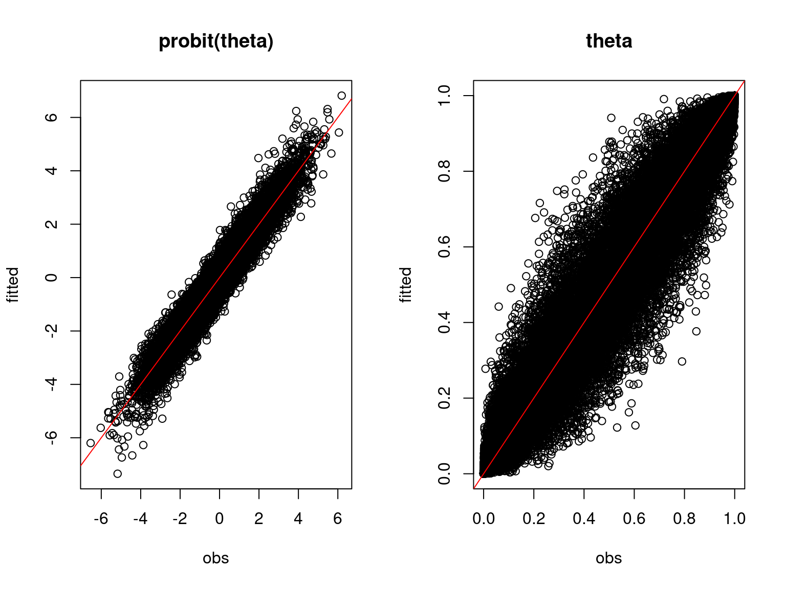
4.2 Mosquitos dataset
We fit a binomial joint species distribution model, including random site effect and latent variables, from the mosquitos dataset using jSDM_binomial_probit_block() function to perform binomial probit regression.
# Fit the model
T1 <- Sys.time()
mod_jSDM_Mosquitos <- jSDM_binomial_probit_block(
# Chains
burnin=10000, mcmc=5000, thin=5,
# Response variable
presence_site_sp=PA_Mosquitos,
# Explanatory variables
site_suitability=~.,
site_data=Env_Mosquitos,
# Model specification
site_effect="random", n_latent=2,
# Starting values
alpha_start=0, beta_start=0,
lambda_start=0, W_start=0,
V_alpha=1,
# Priors
shape=0.5, rate=0.0005,
mu_beta=0, V_beta=10 ,
mu_lambda=0, V_lambda=10,
# Various
seed=123, verbose=1)
T2 <- Sys.time()
T_jSDM_Mosquitos <- difftime(T2,T1)
save(T_jSDM_Mosquitos, mod_jSDM_Mosquitos,
file="jSDM_boral_cache/jSDM_Mosquitos.RData")4.3 Eucalypts dataset
We fit a binomial joint species distribution model, including random site effect and latent variables, from the eucalypts dataset using jSDM_binomial_probit_block() function to perform binomial probit regression.
# Fit the model
T1 <- Sys.time()
mod_jSDM_Eucalypts <- jSDM_binomial_probit_block(
# Chains
burnin=10000, mcmc=5000, thin=5,
# Response variable
presence_site_sp=PA_Eucalypts,
# Explanatory variables
site_suitability=~.,
site_data=Env_Eucalypts,
# Model specification
n_latent=2, site_effect="random",
# Starting values
alpha_start=0, beta_start=0,
lambda_start=0, W_start=0,
V_alpha=1,
# Priors
shape=0.5, rate=0.0005,
mu_beta=0, V_beta=10 ,
mu_lambda=0, V_lambda=10,
# Various
seed=123, verbose=1)
T2 <- Sys.time()
T_jSDM_Eucalypts <- difftime(T2,T1)
save(T_jSDM_Eucalypts, mod_jSDM_Eucalypts,
file="jSDM_boral_cache/jSDM_Eucalypts.RData")4.4 Frogs dataset
We fit a binomial joint species distribution model, including random site effect and latent variables, from the frogs dataset using jSDM_binomial_probit_block() function to perform binomial probit regression.
# Fit the model
T1 <- Sys.time()
mod_jSDM_Frogs <- jSDM_binomial_probit_block(
# Chains
burnin=10000, mcmc=5000, thin=5,
# Response variable
presence_site_sp=as.matrix(PA_Frogs),
# Explanatory variables
site_suitability=~.,
site_data=as.data.frame(Env_Frogs),
# Model specification
n_latent=2, site_effect="random",
# Starting values
alpha_start=0, beta_start=0,
lambda_start=0, W_start=0,
V_alpha=1,
# Priors
shape=0.5, rate=0.0005,
mu_beta=0, V_beta=10,
mu_lambda=0, V_lambda=10,
# Various
seed=123, verbose=1)
T2 <- Sys.time()
T_jSDM_Frogs <- difftime(T2,T1)
save(T_jSDM_Frogs, mod_jSDM_Frogs,
file="jSDM_boral_cache/jSDM_Frogs.RData")4.5 Fungi dataset
We fit a binomial joint species distribution model, including random site effect and latent variables, from the fungi dataset using jSDM_binomial_probit_block() function to perform binomial probit regression.
# Fit the model
T1 <- Sys.time()
mod_jSDM_Fungi <- jSDM_binomial_probit_block(
# Chains
burnin=10000, mcmc=5000, thin=5,
# Response variable
presence_site_sp=PA_Fungi,
# Explanatory variables
site_suitability=~.,
site_data=Env_Fungi,
# Model specification
n_latent=2, site_effect="random",
# Starting values
alpha_start=0, beta_start=0,
lambda_start=0, W_start=0,
V_alpha=1,
# Priors
shape=0.5, rate=0.0005,
mu_beta=0, V_beta=10,
mu_lambda=0, V_lambda=10,
# Various
seed=123, verbose=1)
T2 <- Sys.time()
T_jSDM_Fungi <- difftime(T2,T1)
save(T_jSDM_Fungi, mod_jSDM_Fungi,
file="jSDM_boral_cache/jSDM_Fungi.RData")4.6 Birds dataset
We fit a binomial joint species distribution model with multiple visit by site, including random site effect and latent variables, from the birds dataset using jSDM_binomial_logit() function to perform binomial logistic regression.
# Fit the model
T1 <- Sys.time()
mod_jSDM_Birds <- jSDM_binomial_logit(
# Chains
burnin=10000, mcmc=5000, thin=5,
# Response variable
presence_site_sp=PA_Birds,
# Explanatory variables
site_suitability=~elev+rlength+forest,
site_data=Env_Birds,
trials= Env_Birds$nsurvey,
# Model specification
n_latent=2, site_effect="random",
# Starting values
alpha_start=0, beta_start=0,
lambda_start=0, W_start=0,
V_alpha=1,
# Priors
shape=0.5, rate=0.0005,
mu_beta=0, V_beta=10 ,
mu_lambda=0, V_lambda=10,
# Various
ropt=0.44,
seed=123, verbose=1)
T2 <- Sys.time()
T_jSDM_Birds <- difftime(T2,T1)
save(T_jSDM_Birds, mod_jSDM_Birds,
file="jSDM_boral_cache/jSDM_Birds.RData")4.7 Mites dataset
We fit a joint species distribution model, including random site effect and latent variables, from the mites abundance dataset using jSDM_poisson_log() function to perform a poisson log-linear regression.
# Fit the model
T1 <- Sys.time()
mod_jSDM_Mites <- jSDM_poisson_log(
# Chains
burnin=10000, mcmc=5000, thin=5,
# Response variable
presence_site_sp=PA_Mites,
# Explanatory variables
site_suitability=~.,
site_data=Env_Mites,
# Model specification
n_latent=2, site_effect="random",
# Starting values
alpha_start=0, beta_start=0,
lambda_start=0, W_start=0,
V_alpha=1,
# Priors
shape=0.5, rate=0.0005,
mu_beta=0, V_beta=10 ,
mu_lambda=0, V_lambda=10,
# Various
ropt=0.44,
seed=123, verbose=1)
T2 <- Sys.time()
T_jSDM_Mites <- difftime(T2,T1)
save(T_jSDM_Mites, mod_jSDM_Mites,
file="jSDM_boral_cache/jSDM_Mites.RData")5 Comparison
Then we compare the compilation time and the results obtained with each package.
5.1 Compilation time and deviance
| Simulated | Mosquitos | Eucalypts | Frogs | Fungi | Birds | Mites | |
|---|---|---|---|---|---|---|---|
| Compilation time boral (secondes) | 26508 | 3745 | 1406 | 297 | 1903 | 4561 | 734 |
| Compilation time jSDM (secondes) | 141 | 28 | 46 | 7 | 56 | 1740 | 160 |
| Deviance boral | 14612 | 1014 | 1811 | 157 | 1210 | 30158 | 6127 |
| Deviance jSDM | 14545 | 985 | 1766 | 77 | 1199 | 30130 | 6079 |
|
|
|
|
|
jSDM is 3 to 188 times faster than boral/jags.
5.2 Root-Mean-Square Error (RMSE) for simulated data
Computed for \(\text{probit}(\theta_{ij})\) with the simulated data-set.| boral | jSDM | |
|---|---|---|
| RMSE | 0.55 | 0.545 |
5.3 Estimated Parameters


 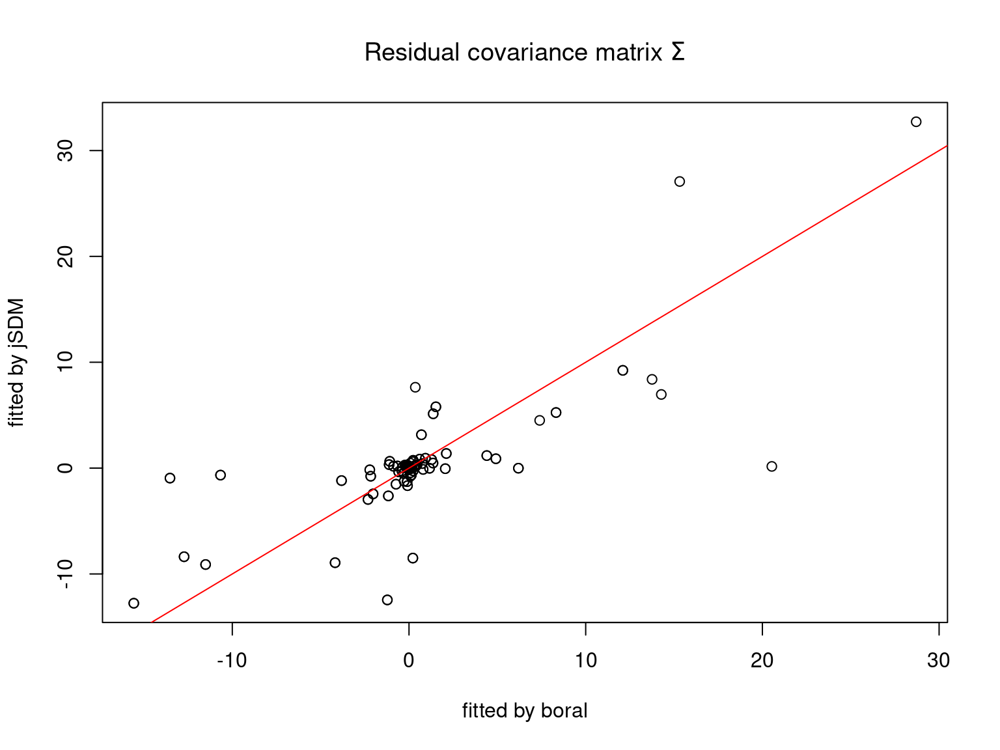
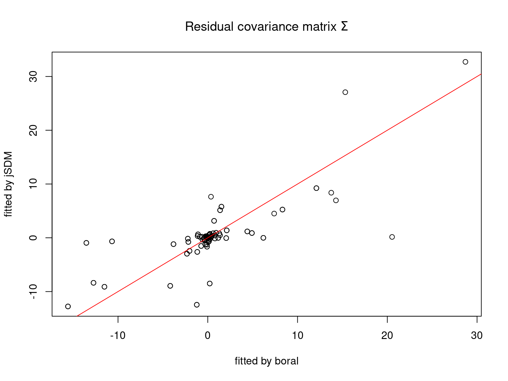5.3.7 Mites dataset

 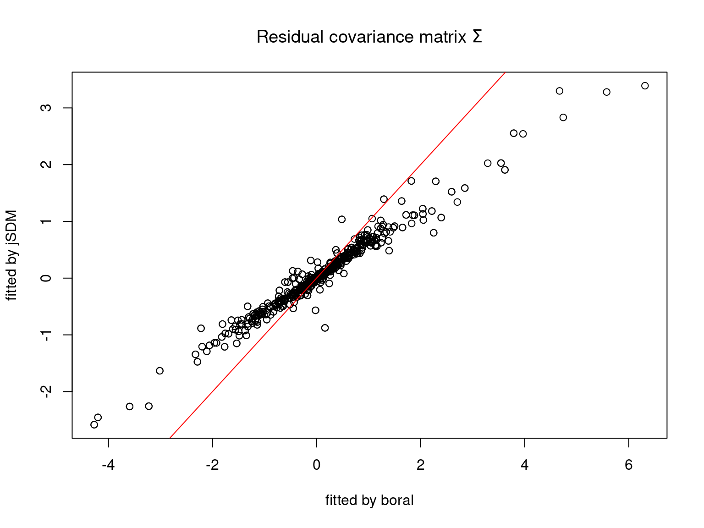
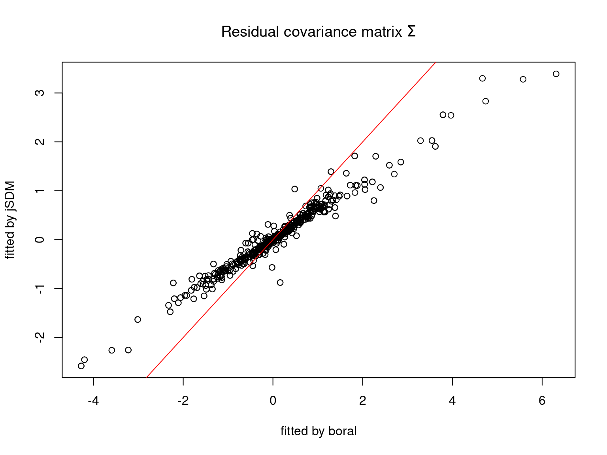
Borcard, D. & Legendre, P. (1994) Environmental control and spatial structure in ecological communities: An example using oribatid mites (Acari, Oribatei). Environmental and Ecological Statistics, 1, 37–61.
Hui, F.K.C. (2016) Boral – Bayesian Ordination and Regression Analysis of Multivariate Abundance Data in r. Methods in Ecology and Evolution, 7, 744–750.
Kéry, M. & Schmid, H. (2006) Estimating species richness: Calibrating a large avian monitoring programme. Journal of Applied Ecology, 43, 101–110.
Warton, D.I., Blanchet, F.G., O’Hara, R.B., Ovaskainen, O., Taskinen, S., Walker, S.C. & Hui, F.K.C. (2015) So many variables: Joint modeling in community ecology. Trends in Ecology & Evolution, 30, 766–779.
Wilkinson, D.P., Golding, N., Guillera-Arroita, G., Tingley, R. & McCarthy, M.A. (2019) A comparison of joint species distribution models for presence-absence data. Methods in Ecology and Evolution, 10, 198–211.